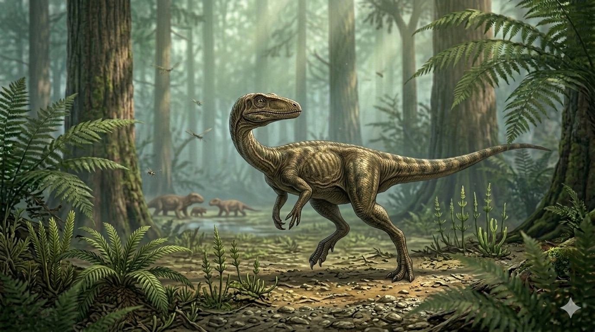

צלוזופיסיס
The Hollow-Form Predator: Coelophysis bauri

תיק מחקר: נתונים אבולוציוניים
תקופת פעילות
221.5 עד 201.3 מיליון שנה
שלהי תור הטריאס, מגיל הנוריאן ועד הרטיאן.
מסה גופנית (משקל)
15 עד 20 קילוגרם
משקל נוצה אבולוציוני שאפשר תנועה קינטית מהירה להפליא.
ממדים (אורך)
2.5 עד 3 מטרים
יצור מוארך, זריז ואווירודינמי, בעל זנב ארוך המשמש כמשקולת איזון דינמית.
מיקום גיאוגרפי
פנגיאה (דרום-מערב ארה"ב)
אזור קו המשווה של יבשת-העל העתיקה פנגיאה. הממצאים המרכזיים התגלו בתצורת צ'ינלה בניו מקסיקו ובאריזונה.
סיווג טקסונומי קריטי
דינוזאור – תרופוד (Theropoda)
אחד הנציגים הפרימיטיביים והמוקדמים ביותר של שושלת הדינוזאורים הטורפים הדו-רגליים, המהווה אבן פינה אבולוציונית לכל טורפי-העל והעופות המודרניים.
01 // ניתוח אטימולוגי נרחב
| החלק בשם | שפת מקור | פירוש ומשמעות היסטורית |
|---|---|---|
| Coelo- | יוונית (κοῖλος) | חלול (Koilos) מתייחס למאפיין הפורץ-דרך של שלדו: עצמותיו היו חלולות (פנאומטיות), מה שהפחית דרסטית את משקל גופו, בדומה לעופות המודרניים. |
| -physis | יוונית (φύσις) | צורה / מבנה (Physis) הלחם השם המלא מתורגם כ"בעל צורה חלולה" או "מבנה חלול". |
| bauri | לטינית | על שם גיאורג באור ציון שמו של חוקר האנטומיה ההשוואתית גיאורג באור. השם הוענק באופן רשמי בשנת 1889 על ידי הפלאונטולוג אדוארד דרינקר קופ. |
02 // תולדות הגילוי: ממשלחת סקר שגרתית לאוצרות גוסט ראנץ'
משלחת המוזיאון (1947)
תולדות גילויו של הצלוזופיסיס נפרסות על פני עשורים ומהוות דוגמה מובהקת לתגלית מונומנטלית שנולדה מתוך שינוי תוכניות. העדויות הראשונות נחשפו בשנת 1881 ותוארו רשמית על ידי אדוארד דרינקר קופ בשנת 1889, על בסיס שברים בודדים. אולם, הפריצה המחקרית האדירה התרחשה בקיץ 1947, במהלך משלחת של המוזיאון האמריקאי להיסטוריה של הטבע בראשות הפלאונטולוג אדווין ה. קולברט.
המטרה המקורית של משלחת קולברט לא הייתה חיפוש דינוזאורים, אלא ביצוע סקר סטרטיגרפי של תצורת צ'ינלה לאיתור מאובני פיטוזאורים ודו-חיים כבדים ששלדו שלהם נמצא לרוב בנפרד. בדרכם לאריזונה, עצרה המשלחת ב"חוות הרוחות" (Ghost Ranch) בניו מקסיקו להתארגנות לוגיסטית, באישורו של בעלי החווה הפילנתרופ ארתור פאק.
קבר האחים ההמוני ופתרון התעלומה
בוקר אחד, בעוד הצוות סורק את המדרונות, ג'ורג' ויטאקר (משמר המאובנים הראשי) ותומאס אירארדי הבחינו בשברי עצמות קטנות, דקות וחלולות שהתגלגלו מטה. ויטאקר הבין מיד שאין אלו העצמות הכבדות שחיפשו. הם טיפסו במעלה המדרון בעקבות "שביל הפירורים" של העצמות, ולקראת שיא הרכס נחשף מחזה עוצר נשימה: בלוק סלע עצום דחוס בשלדים שלמים ומחוברים לחלוטין.
קולברט הוזעק לנקודה, בחן את הלסת המאפיינת בעלת השיניים המשוננות והבין שמדובר בקבר אחים המוני. ההשערה המדעית שהתגבשה היא שלהקה עצומה התקבצה סביב מקור מים שהתייבש, והופתעה על ידי שיטפון בזק עוצמתי (Flash flood) שהטביע וקבר את כולם יחד בבוץ וסחף. זה אפשר השתמרות תלת-ממדית מושלמת והוכיח התנהגות להקתית יוצאת דופן. המשימה המקורית בוטלה מיד, והבלוקים חולצו במבצע הנדסי מורכב.
03 //ביומכניקה: אב הטיפוס של התרופודים
שלד אווירודינמי ועצמות דקות
הצלוזופיסיס היווה את המודל האבולוציוני המנצח שעליו נבנתה אימפריית התרופודים כולה. העצמות החלולות אפשרו לו להגיע למהירויות ריצה יוצאות דופן ללא עומס משקל עודף. צווארו היה ארוך וגמיש בתצורת האות S, וזנבו הנוקשה שימש כהגה כיוון מתוחכם בעת פניות חדות במהירות גבוהה.
חושים ויציבה מובהקת
עיניו הגדולות פנו מעט קדימה והעניקו לו ראייה סטריאוסקופית ראשונית ואומדן מרחק מעולה. יציבתו הדו-רגלית המובהקת (Obligate Bipedalism) שחררה לחלוטין את גפיו הקדמיות לצורך ציד בלבד.
מערכת הציד והלסת
גולגולתו הצרה צוידה בלמעלה מ-100 שיני-להב קטנות, משוננות (Serrated) ומעוקלות לאחור שנועדו לחתוך ולשסע. גפיו הקדמיות היו מפותחות, עם שלוש אצבעות פעילות בעלות טפרים קטלניים ויכולת אחיזה (Grasping hands) לריתוק הטרף.
04 // תזונה ואקולוגיה: צייד אופורטוניסטי
תפריט וטכניקת Grasp and Slash
הצלוזופיסיס היה קרניבור אקטיבי מובהק. בשל ממדי גופו הקלים, הוא לא התמודד עם אוכלי העשב הענקיים, אלא ביסס את תזונתו על חולייתנים קטנים ומהירים: זוחלים קטנים, דו-חיים ליד מקווי מים, וחרקים גדולים.
במקום עוצמת נשיכה מרסקת עצמות, הוא הסתמך על מהירות ודיוק. הוא רדף אחרי טרף חמקמק במרחבים הפתוחים, נאמד את המרחק במדויק, וזינק קדימה תוך שיגור צווארו כקפיץ מתוח. מרגע שהטרף נלכד בשיניו המעוקלות (שמנעו היחלצות), הוא נעזר בגפיו הקדמיות כדי לשתק ולשסע את הקורבן.
תיקון העיוות ההיסטורי: שבירת מיתוס הקניבליזם
במשך עשרות שנים הוכתם שמו כקניבל, בעקבות עצמות קטנות שנמצאו בקיבות של פרטים בוגרים ב"חוות הרוחות". המחשבה הייתה שבעיתות בצורת, הבוגרים ניזונו מהגורים של עצמם.
אולם, סריקות מיקרו-CT מתקדמות בשנת 2002 הוכיחו חד-משמעית שהשרידים כלל לא השתייכו לדינוזאורים צעירים, אלא לזוחלי קרוקודילומורפ קטנים דמויי-תנין שניצודו (כמו ההספרוסוכוס). הגילוי ניקה אותו לחלוטין מאשמת הקניבליזם.
05 // סיבת ההיעלמות: סוף הטריאס וההזדמנות של היורשים
הקריסה הפתאומית של שרשרת המזון והתייבשות בתי הגידול חיסלו את מרבית הפאונה היבשתית, ובתוכה שושלת הצלוזופיסיס שקרסה תחת הרעב ושינויי התנאים. למרות היעלמותו הפיזית כמין ביולוגי, המורשת האנטומית הפורצת-דרך שהשאיר אחריו — העצמות החלולות והיציבה הדו-רגלית — שרדה. מתוך אפר חורבן הטריאס, השלד האבולוציוני שפיתח הצלוזופיסיס אפשר ליורשיו התרופודים לנצל באופן מיידי את הריק האקולוגי, לזנק במימדיהם ולשלוט בכדור הארץ ללא מתחרים לאורך עידני היורה והקרטיקון.